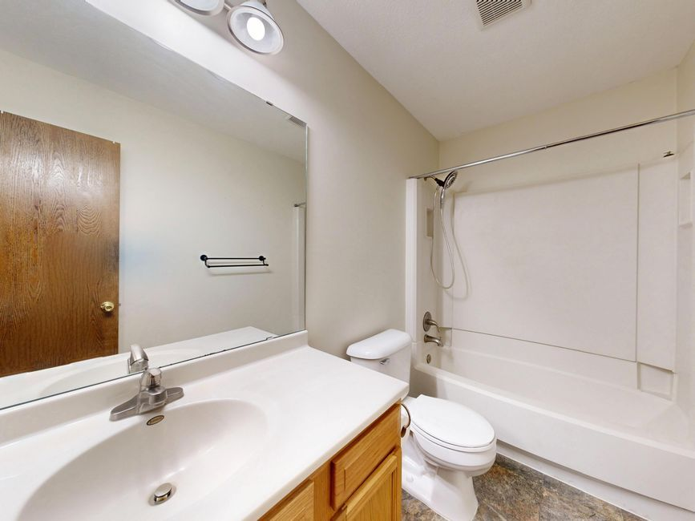

After a bathroom remodel, the old vanity, toilet, tub and mirror usually end up in the garage. Have the plumber disconnect and cap the lines first, check any older flooring for asbestos before it is torn up, and offer clean fixtures to a donation store. What is left can be hauled in one trip by a two-person crew.
A bathroom is the smallest room in most houses and somehow produces one of the most awkward piles. Every piece is either heavy, breakable or shaped wrong for a doorway. We get these calls in two versions. One is the homeowner doing the work in stages, with a vanity in the garage and a toilet on the back patio. The other is the homeowner whose contractor quoted the remodel without the haul-away, and now the old fixtures are theirs.
Who disconnects the toilet, the sink and the tub
Not us. A toilet, a vanity sink and a tub are all tied into water lines and a drain, and the person who disconnects them should be the person who knows how to cap them. That is usually the plumber or the remodeling contractor on the job.
By the time we arrive, every fixture that is going should be:
- Shut off and disconnected at the supply valves, with the lines capped so nothing drips.
- Drained. A toilet holds water in the tank and the bowl. Flush it after the water is off, then sponge or towel out what is left so it does not spill on the way through the house.
- Free of the wall and floor. Vanity tops are often glued to the cabinet, and the cabinet is often screwed to the wall. A tub is usually set in place before the tile goes up around it, which is why getting one out is a demolition job, not a moving job.
If a tub still has tile over its edge, it is still part of the wall. We haul what has been taken out. Our post on clearing rooms before foundation or plumbing work walks through the same order of trades: the contractor does the work, then we clear what they leave.
Check the floor and the walls before anyone tears them out
This is the part to get right before a single tile comes up. In older houses, vinyl flooring, its backing and some wall materials can contain asbestos. The EPA's page on protecting your family from asbestos recommends having a home inspected by a trained and accredited asbestos professional before a remodel, because remodeling disturbs building materials. It also says not to sand, scrape or level flooring that may contain it.
Paint is the other one. For homes built before 1978, the EPA's renovation guidance for do-it-yourselfers recommends hiring a lead-safe certified contractor and lays out how to contain the dust. It also notes that most waste from routine residential remodeling is treated as ordinary solid waste, which is the kind of debris we haul.
We do not handle asbestos, and we do not test for it. If there is any question about the old floor, get it tested first. Leftover paint, caulk, thinner and cleaning chemicals from the job go to your city's household chemical program, such as Plano's household chemical collection. We will point you to yours.
Get the floor tested before it comes up, not after. Once old vinyl or its backing has been scraped off and broken up, the question of what was in it is much harder to answer. A test before demolition might hold the job up a day. Finding out afterward is a much bigger problem.
Can an old vanity, toilet or tub be donated
Sometimes, and the vanity is the most likely of the three. Habitat for Humanity ReStores are home improvement stores that take donated goods and building materials, and each store sets its own list. A solid wood vanity with doors that close, a mirror with no chips, or a light fixture still in one piece is worth a phone call to the store near you before it goes anywhere else.
Toilets are a harder sell. A cracked bowl or a stained tank is not going anywhere but the haul. An older toilet is also often the reason for the remodel in the first place. The EPA's WaterSense page on residential toilets notes that older, inefficient toilets can use as much as 6 gallons per flush, against a current federal standard of 1.6. That is a fixture most people are glad to see leave, and it is not one we would talk anyone into giving away.
Our guide to donating furniture in DFW covers how donation centers usually decide, and the same logic applies to fixtures: clean, complete and working, or it gets turned away.
What we haul after a bathroom remodel
On a typical bathroom job, we take:
- the old vanity cabinet, the countertop and the sink, together or in pieces
- toilets, tanks and lids, once they are drained
- fiberglass, acrylic and steel tubs and shower pans that have already been pulled out
- mirrors, medicine cabinets and the old light bar over the sink
- shower doors and the frames they hung on
- drywall, backer board, trim and the boxes the new fixtures came in
Glass is the careful part. A large mirror or a framed shower door goes out flat and in one piece if it is in one piece when we get there. If it is already cracked, tape across it before we arrive so nothing shifts on the way out.
Old tile and mortar are heavier than everything else in the pile. Tell us about them when you send the photo, and the crew plans for it. If the water heater in the next closet is being swapped at the same time, our post on water heaters, softeners and the utility closet covers who drains and disconnects it. If the kitchen is next, we wrote up kitchen remodel leftovers separately, since the cabinets and appliances there come out differently.
A lot of the bathrooms we clear are in long-owned houses, often while a family is clearing out a long-owned house in Carrollton or getting one of the older houses in Dallas ready to list. The fixtures are the same. The difference is usually how much else is in the garage next to them.
Where it goes after we load it: usable fixtures and cabinets go to local donation partners, metal goes to recyclers, and our stated goal is to keep more than half of every load out of the landfill.
How the pickup runs
Send us a photo of what came out of the bathroom and where it is sitting now. Tell us whether anything is still attached, whether there is old tile in the pile, and whether any of it is upstairs.
A crew looks at what is going and gives you a firm number before anything is loaded. The quote is the bill, and disposal is included. We are affordable and priced fair, based on how much there is to take. You point, we carry, we sweep. These are our own crews, not gig labor.
Call before noon and same afternoon is typical across the northern suburbs. When the old bathroom is ready to go, tell us what needs to go, or read more about how our construction debris removal works.
Frequently asked questions
Will you disconnect my old toilet or vanity?
No. The plumber or remodeling contractor should shut off, disconnect and cap the lines. Once a fixture is free of the wall and floor and drained, we carry it out.
Do you take old bathtubs?
Yes, once the tub has been pulled out of its alcove. Fiberglass, acrylic and steel tubs and shower pans are all common. Tell us what yours is made of when you send the photo.
Can I donate an old bathroom vanity?
Often, if it is solid, clean and the doors and drawers work. Call your nearest Habitat ReStore first, since each store decides for itself what it accepts.
Do you haul old tile and drywall from a bathroom?
Yes. Tell us how much tile is in the pile so the crew plans for it. Leftover paint, caulk and chemicals go to your city's household chemical program instead.
What if the old floor might have asbestos?
Get it tested by an accredited asbestos professional before anyone tears it out. We do not handle asbestos or test for it.
A finished bathroom is a good day. The old one sitting in the garage should not be the thing that outlasts it.